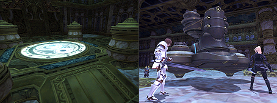
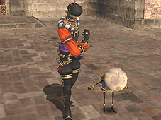
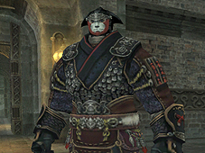
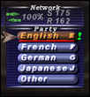

[Event-Related]
Multiplayer Battlefield: Salvage
With the introduction of this new type of battle system, four new areas in the Ruins of Alzadaal have been opened up to adventurers.
Related Information>>

Changes/Additions to Chocobo Raising
Related Information>>
Kamp Kweh -- A place where adventurers can bring their chocobos to interact with others, as well as view the conditions of the other participants’ animals is now open for business.
The Chocobo Hot and Cold Game -- A new treasure-hunting activity for chocobos and their owners has been introduced.
A new quest to obtain the new chocobo ability “treasure finder” has been introduced. This ability will increase a chocobo’s ability to locate treasure when playing the Chocobo Hot and Cold Game.
Two new beneficial statuses “bursting with vitality” and “sparkling with intelligence” have been added. When a chocobo is affected by these, not only will training programs yield better results, but the chocobo will also be more receptive to physical and mental stimulation.
Previously, a chocobo being in love would only negatively affect the success rate of its training. However, now this status will sometimes benefit the chocobo.
When taking your chocobo for a walk, it may now find items for you.
Changes to Besieged
Players can now earn limit points by participating in Besieged.
When players are transported out of Al Zahbi due to player number restrictions, all HP-draining status effects will be removed.
An issue where, under rare circumstances, players who were KO’d during a siege of Al Zahbi lost experience points has been addressed.
Mog Locker capacity has been increased to 70 items.
Several new quests originating in the Treasures of Aht Urhgan area are now available.
Players can now confirm the Ashu Talif quest offer status by speaking with the NPC who originally accepted the offer.
The timing at which several Aht Urhgan mission events become available for viewing via the event replay feature has been adjusted.
Transportation to Tu’Lia
After meeting certain requirements, players will now be able to teleport to Tu’Lia from the Hall of Transference located within the spires of Holla, Dem, and Mea.
[Battle-Related]
Monster placement has been adjusted in the following areas: Bhaflau Thickets, Alzadaal Undersea Ruins, Caedarva Mire
The following paladin abilities/traits have been adjusted:
Sentinel
The effect of Sentinel will be changed from an increase in defense to straight damage mitigation.
Also, all actions taken while Sentinel is in effect will generate additional enmity, allowing the paladin to more easily gain and maintain an enemy’s attention.
Rampart
In addition to the defense bonus granted to party members within the area of effect, Rampart will now also provide a “Magic Shield” that will absorb a certain amount of magic damage in the same manner as the spell “Stoneskin.”
Shield Mastery
In addition to granting a TP bonus, the Shield Mastery job trait will also prevent interruption to spell casting when an enemy’s attack is blocked with a shield.
The casting time for all Absorb spells has been reduced from four seconds to two.
Blue Magic
Several new spells have been added, as well as the corresponding terms for the auto translate dictionary.
The following spells have been adjusted:
*The recast time for Filamented Hold and Chaotic Eye have been reduced
*The recast/casting time for Infrasonics has been reduced
*The recast time and MP required for casting Frightful Roar has been reduced.
Corsair Adjustments
Rapid Shot
“Rapid Shot” has been added to the corsair’s job traits.
Quick Draw Accuracy
A corsair’s AGI will now affect the accuracy of Quick Draw. This will make it possible to improve the accuracy of Quick Draw by increasing the relevant attributes.
Quick Draw Recast Time
The recast time for Quick Draw will be reduced from 3 minutes to 1 minute.
In accordance with this change, the Group 1 merit point ability Quick Draw Recast will now reduce recast time by 2 seconds instead of 6 seconds.
Light Shot and Dark Shot
Light Shot and Dark Shot will be changed to have the following enfeebling effects instead of inflicting damage:
Light Shot: Sleep
Dark Shot: Dispel
*The Quick Draw additional effect of increasing the potency of enfeebling effects will remain unchanged.

Puppetmaster Adjustments
New high-level automaton weapon skills have been added.
New automaton attachments have been introduced.
New automaton emote motions have been added. An automaton will use these automatically when its master does.
blush／bow／cheer／clap／dance／goodbye／hurray／joy／panic／point／salute／surprised／wave
[Item-Related]

Several new pieces of equipment have been added.
The following items can now be stored with special NPCs:
bomb lantern, pumpkin lantern, mandra lantern, witch hat, coven hat
New synthesis/desynthesis recipes have been added.
The names of the following items have been changed:
sagacious cotton obi -> sagacious brocade obi
enthralling cotton obi -> enthralling brocade obi
deductive cotton obi -> deductive brocade obi
[System-Related]
Fellows will no longer disappear when changing areas or logging back in. However, a fellow cannot follow a player into an area where he/she cannot be called.
A new text command [/ignorepet] will also be introduced that will allow you to ignore the pets of others, including automatons, avatars, and charmed monsters.
The text command can be used in the following way:
/ignorepet: Displays current status when no subcommand is specified
/ignorepet on: Ignore pet targets
/ignorepet off: Allow pet targets
*While using [/ignorepet on], you will be unable to target others’ pets.
*You will always be able to target monsters’ pets, player character’s pets in PvP, and Fellows regardless of the ignorepet command.
The text command [/blockaid] will no longer turn off in the event a player has fallen in battle. Also, players will now be able to adjust the [/blockaid] settings while they are KO’d.

The following language buttons have been added to the Language feature under Party in the main menu:
French/German/Other
In addition to J and E, F/G/? will now appear in the search window when a player is seeking a party.
*As you now can select multiple buttons, the [Bilingual] button has been removed.
The following button under the main menu option “Friend List” has been changed:
Accept & Add -> Accept
In areas where use of a support job is limited, players will no longer be able to take advantage of certain support jobs’ wide scan abilities.
An issue concerning the font color of the auction house listing of woozyshrooms has been fixed.
Several new terms have been added to the auto translation feature.
| Category | Term |
| Game Terms | Salvage |
| Game Terms | Mog Locker |
| Text Commands | /ignorepet |
Due to the extreme popularity of the kraken club and trouble arising as a result of a large number of players attempting to acquire the item, the monster that previously dropped the club (Lord of Onzozo) will do so no longer. A new method of obtaining the item is currently under consideration and will be implemented shortly. There are no plans on changing the drop rate of the item in question. However, the development team would like to grant players more opportunities to obtain it.
Please check back here for further updates on this issue.